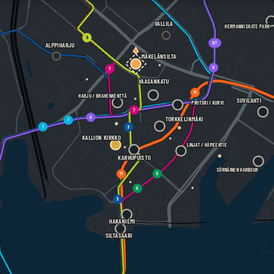

SCENE CLUB · MOTION CANDIDATE
Review only · no campaign save

SCENE CLUB
Mäkelänsilta · Day 2
Aatami arrives.
BACK IN KALLIO
Visual review of the return · no campaign effects applied
Replay candidate